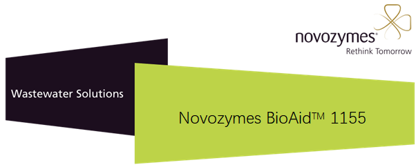
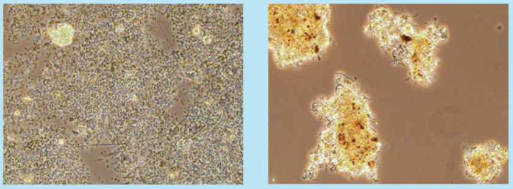

诺维信生物营养剂BioAid 1155 是一种混合生物促生营养素， 是经过配方筛选与优化的混合液体产品。该产品含有高浓度的易吸收的BOD，以及生物发酵提取物和多种微量元素，能使BOD 受限制或在缺乏营养源的污水中增强生物生长效果，当BioAid 1155 与诺维信的其他微生物产品一起应用时，可增强系统性能并加速恢复。
优势
生物污水处理系统要求BOD:氮:磷的比率为 100:5:1。氮用于制造蛋白质、细胞壁成分和核酸。磷用于细胞合成和能量传输。生物繁殖还需要一些必要的微量元素，这些微量元素能帮助生物健康生长和繁殖，同时也帮助增强对于冲击的抵抗力。
如果缺乏营养素，BOD 的去除效率会随之下降，某些 BOD可被细菌吸收，却无法被降解。这样 BOD 就作为多糖存储在微生物细胞中，如果此类微生物生长过度的话，则可能导致污泥膨胀及沉淀问题，也可能会导致泡沫问题；另外，缺乏营养素也是导致丝状菌繁殖的一个常见原因，因为与正常的菌胶团相比，特定的丝状菌对营养素的要求较低，并可在这些条件下取代菌胶团。
在生产停顿期间，处理系统经常需要补充碳源来作为微生物的食物来源，并需要合适的氮源和磷源来维持正常的微生物种群，或在启动期间需要补充碳源来作为速效的底物。一般系统培养形成的微生物种群偏好稳定的污染物作为食物，但是某些生产设施可能不会持续运行。在停工期间，如果 BOD 不足，微生物种群可能会处于饥饿状态。
BioAid 1155营养产品非常适合应用于污水处理。它们可以为细菌提供可利用的速效营养素，并以合适的比例进行混合，有助于细菌实现最佳的生长速度。BioAid 1155 营养素有助于提高处理效率，在缺乏营养素的污水处理系统中改善出水水质。
性能
诺维信的 BioAid 1155 产品旨在通过确保达到充足的营养水平来提高微生物种群的性能。这样，就可以增强微生物种群的活性和特性。例如下图：左图显示的是在缺乏营养情况下污泥，颗粒散，从而导致沉淀能力差；而右图显示营养均衡情况下的絮体颗粒良好，沉淀效果良好。

建议使用
BioAid 1155 为液态产品，可用计量泵来提供，或直接倒入生物处理装置的入口。
缺乏营养素添加量应根据 BOD 总负荷而定，并应将系统中现有的氮和磷考虑在内。
低 BOD当发生短期生产停顿时，应采用 BioAid 1155 来维持微生物群落的正常功能。也可在系统启动期间，将该产品用于快速培养微生物种群的一种方式，或将该产品用作反硝化作用补充的碳源。